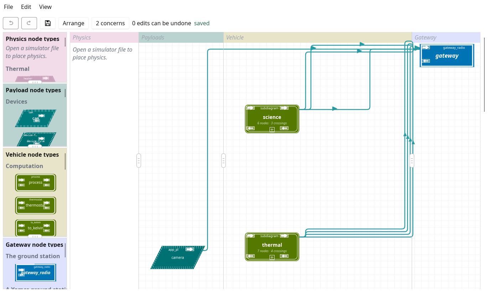
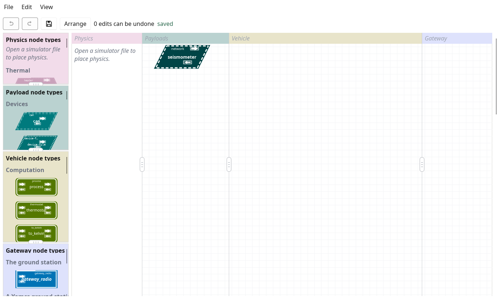
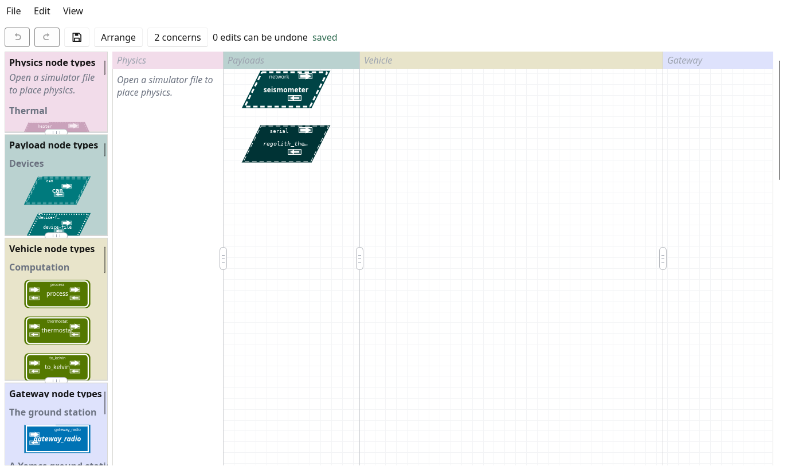
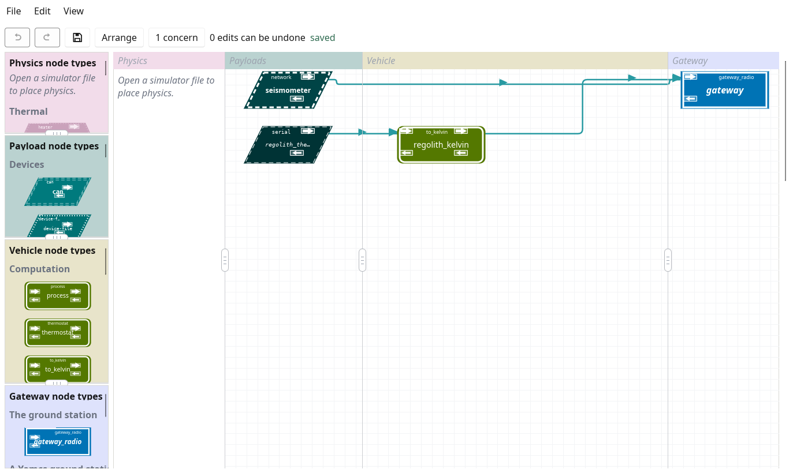
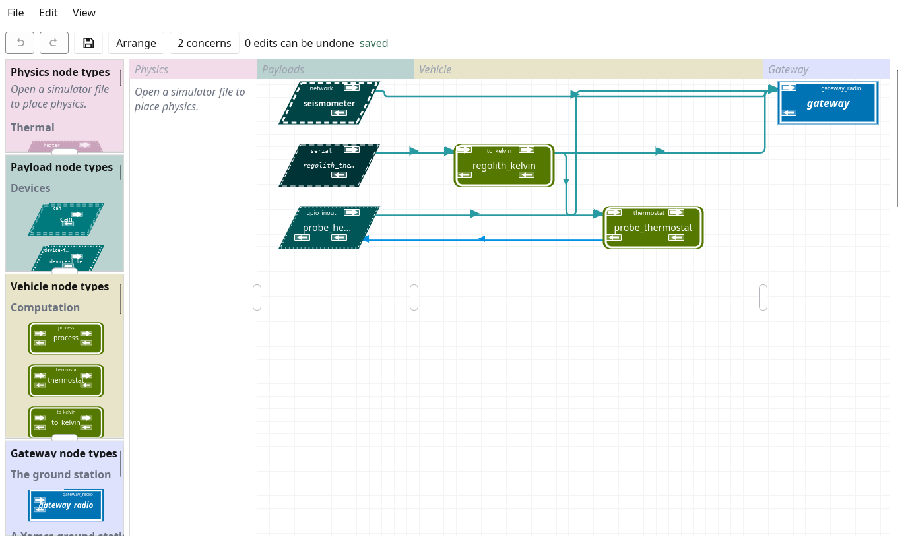
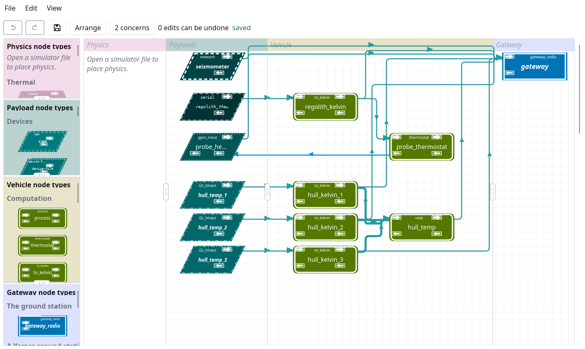
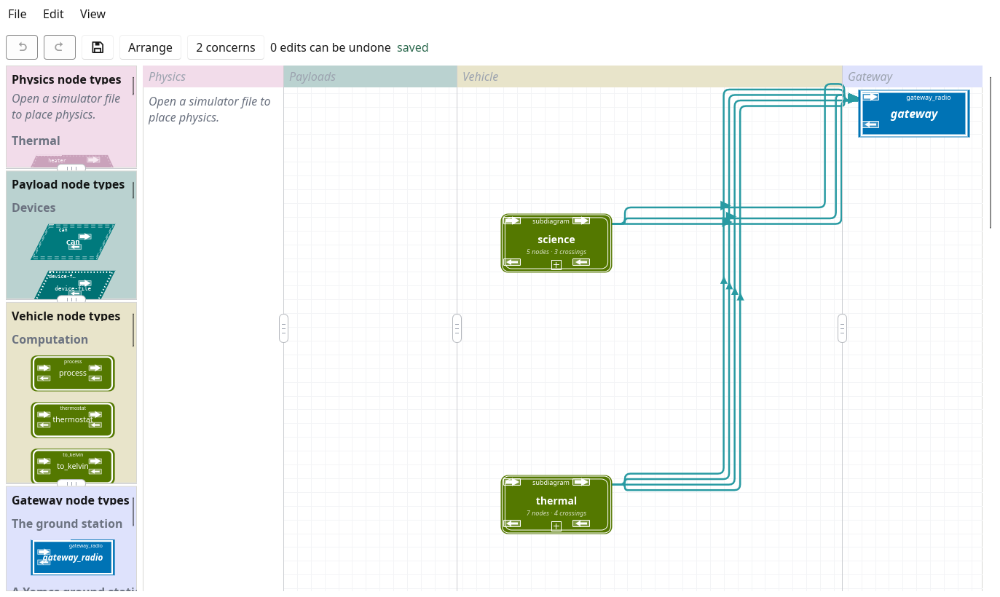

The shipped examples each show one idea: one payload, one computation, one gateway. A mission's vehicle has all of them at once, and the ways they combine -- names shared across the graph, ports and ids that move as nodes are added, files that include others, rates that add up on one link -- are what no single example shows.
This guide builds one vehicle, a small lunar lander's science deck, a stage at a time, from the minimal example to a configuration a mission could start from. Each stage adds one thing and says why it is added the way it is. Every stage is a configuration that tcsverify passes and that runs on a desk under --simulate=all, and a test holds every one of them to that, so the files the guide shows are the files that work.
It is a companion to the manuals, not a replacement: each stage names the section of the tcspecial manual that says everything about what it adds.

Where the guide ends: the deck of stage 9 as tcsgui draws it, its two subsystems collapsed into boxes, the camera beside them, and every line ending at the gateway node.
A lander's science deck, chosen so that each stage needs a different part of TCSpecial, and so that every payload has a simulated device tcssim already provides:
| Payload | Interface | Stage |
|---|---|---|
| seismometer | network (UDP) | 1 |
| regolith_thermometer | serial, asked with T? | 2 |
| probe_heater | GPIO line | 4 |
| hull_temp_1 to _3 | I2C | 6 |
| camera | an app node (a program) | 9 |
The regolith thermometer and its heater are a heat-flow probe, as the Apollo landers carried: the probe is warmed above the ground around it, and how fast it cools says how well the regolith conducts heat. The three hull sensors watch the deck's own temperature, and are three so that one going wrong does not take the reading with it.
Each stage is a directory of docs/building-a-vehicle/: stage-01 to stage-10, and stage-10-cfs and stage-10-yamcs beside the last, each holding the configuration in both spellings, deck.ytcs and deck.xtcs, and its simulator file, deck-sim.yaml. From stage 7 the stages include files in docs/building-a-vehicle/common/. Any stage can be started from, and two compared with diff:
$ diff docs/building-a-vehicle/stage-02/deck.ytcs \ docs/building-a-vehicle/stage-03/deck.ytcs
Every stage runs the way an example does, tcsmoc starting tcspecial and tcssim itself:
$ make run TCSPECIAL_CONFIG_FILE=docs/building-a-vehicle/stage-04/deck \ TCSPECIAL_SIM_FILE=docs/building-a-vehicle/stage-04/deck-sim.yaml
Starts from: examples/minimal, with the payload named for what it is.
A configuration has a tcspecial section, which says where tcspecial takes its commands, where it sends its beacons and where it keeps its state, and then the nodes. Stage 1 has one node, the seismometer: software on the deck's science computer that sends each reading over UDP of its own accord.
- type network:
# The seismometer: software on the deck's science computer that sends
# each reading over UDP of its own accord, so nothing here says when to
# read it. No line is drawn from it, so tcspecial sends what it reads to
# the ground over the tcspecial section's payload_telemetry: from
# source_base plus the seismometer's device id to dest_base plus the same
# id. A device id is a node's place among the names of all the nodes,
# sorted, counting from nought, and the seismometer is the only node, so
# it is 0 and the ground hears it on 127.0.0.1:6100.
- payload: seismometer
address: "127.0.0.1"
port: "5401"
protocol: "udp"
Nothing is drawn from the seismometer to anywhere, so tcspecial sends what it reads straight to the ground over the tcspecial section's payload_telemetry: to its dest_base port plus the seismometer's device id. A device id is a node's place among the names of all the nodes, sorted, counting from nought. The seismometer is the only node, so it is 0, and the ground hears it on 127.0.0.1:6100.

Stage 1 in tcsgui: one payload, nothing drawn from it.
Check it, then run it:
$ tcsverify docs/building-a-vehicle/stage-01/deck.ytcs \ docs/building-a-vehicle/stage-01/deck-sim.yaml
tcsmoc shows the beacon, which says the vehicle is alive and which configuration it runs, and a panel for the seismometer.
See: "A Network Payload" in the tcspecial manual.
The regolith thermometer is a probe on a serial line: asked T?, it answers two bytes, a signed temperature in sixteenths of a degree Celsius. It is asked once a second, by its own trigger_interval.
# The regolith thermometer: a probe pushed into the ground beside the
# lander, on a serial line. Asked for its temperature with T?, it answers
# two bytes, signed, most significant first, in sixteenths of a degree
# Celsius. It is asked once a second, by its own trigger_interval. It is
# device 0, the first name sorted, so the ground hears it on
# 127.0.0.1:6100.
- payload: regolith_thermometer
byte_length: "8"
datarate: "9600"
max_length: "2"
path: "/tmp/tcs-deck-regolith"
read_timeout: "none"
stop_bits: "1"
trigger: '"T?\r"'
trigger_interval: "1 s"
world-out-type: "i16"
The simulator file gains a device for it too, a pseudo-terminal at /tmp/tcs-deck-regolith that answers when asked.
Adding a node can move every other node's port. Device ids are places in the sorted names, and regolith_thermometer sorts before seismometer:
| Node | Device id | Port, stage 1 | Port, stage 2 |
|---|---|---|---|
| regolith_thermometer | 0 | -- | 6100 |
| seismometer | 1 (was 0) | 6100 | 6101 (moved) |
A ground station written for stage 1 now listens to the thermometer on the seismometer's old port. This is why a ground station should take its ports from the configuration -- tcslib-moc's and tcsmoc's do -- rather than from a list written beside it, and why tcsverify --summary (Checking the whole vehicle) lists every port a configuration uses.

Stage 2: two payloads, each still reporting straight to the ground.
See: "A Serial Payload" in the tcspecial manual.
The thermometer's two bytes mean nothing to the ground until they are a temperature. A to_kelvin computation, regolith_kelvin, makes them one: it is a vehicle node, between a payload and the ground.
# The thermometer's two bytes made a temperature in kelvin: a reading of
# 1 is a sixteenth of a degree, and nought is 273.15 K. The node states
# what it takes, type-in, and what it makes, a kelvin, is its function's,
# so a line from a payload sending anything but an i16 to it is refused
# when the configuration is read.
- compute: regolith_kelvin
function: "to_kelvin"
offset: "273.15"
scale: "0.0625"
type-in: "i16"
world-out:
- gateway.regolith_kelvin
world-in: [regolith_thermometer]
A node joins others through four terminals, one at each corner. Readings travel across the top, towards the ground; what the ground sends back travels across the bottom, towards a payload:
A node's four terminals. A line is written under its source as node.name -- regolith_kelvin.regolith_thermometer under the thermometer's world-out -- and the node it reaches lists the name under its sink, world-in: [regolith_thermometer].
Lines are typed: the thermometer states that it sends an i16 (world-out-type), the computation that it takes one (type-in), and a line between two that disagree is refused when the configuration is loaded.
A node with lines goes where its lines say and nowhere else, so regolith_kelvin's temperatures need a line to somewhere, and the ground is reached through a gateway node. It arrives here, at the stage that first needs it, and the seismometer is drawn into it too, so that the ground has one place to receive everything from:
- type gateway_radio:
# The ground's end of the vehicle's data, added here because it is first
# needed here: a node with lines goes where its lines say and nowhere
# else, so the temperatures regolith_kelvin makes need a line to
# somewhere, and the ground is reached through a gateway node. tcspecial
# sends what each node drawn into it produces to ground_base's address,
# at its port plus that node's device id: regolith_kelvin is id 1, so its
# temperatures arrive on 127.0.0.1:5101, and the seismometer, id 3, on
# 5103. It is called gateway in every later stage, which is the name the
# links to it are written with.
- gateway: gateway
ground_base: "127.0.0.1:5100"
world-in: [regolith_kelvin, seismometer]

Stage 3: the first computation, and the gateway node on the right.
See: "The vocabulary" and the computations in the tcspecial manual.
The heat-flow probe needs its heater: a GPIO line, probe_heater, which a thermostat computation switches from the probe's temperature. The thermostat's decision leaves at its moc-out and arrives at the heater's moc-in -- the bottom of the terminals figure above.
# The probe's heater switch, line 4 of /dev/gpiochip1: 1 for on and 0 for
# off, as probe_thermostat decides. A gpio_inout reports as well as
# drives: every second it tells the ground what it was last told, so a
# report lost on the way is made good by the next. On a desk tcssim
# answers for it over UDP at its sim_address, so that no dummy chip is
# needed; flown, the chip is opened.
- payload: probe_heater
lines: "4"
path: "/dev/gpiochip1"
sim_address: "127.0.0.1:5402"
state_interval: "1 s"
moc-in: [probe_thermostat]
world-out:
- gateway.probe_heater
The heater reports to the gateway every second what it was last told, so the ground follows it on a beat and a lost report is made good by the next. On a desk, tcssim answers for the line over UDP at its sim_address; flown, the GPIO chip is opened instead, and nothing in the configuration changes.
The ground does not switch the heater itself: the thermostat decides again on every reading, and a command to the heater would be overruled within a second. What the ground sets is the thermostat's setpoint, through a command binding, the one way the ground may change a node's attribute while the vehicle runs:
commands:
# The temperature, in kelvin, the probe is held at, which the ground may set
# while the vehicle runs: SET_NODE naming probe_thermostat and setpoint. An
# attribute no binding names is refused.
- { from: gateway, sets: probe_thermostat.setpoint }

Stage 4: the thermostat's decision travelling back to the heater.
From here on tcsgui's toolbar says 2 concerns. A concern is a shape that may be a mistake and may be meant, never something that stops the configuration being read or flown, and these two are meant:
Each can be set aside in the concerns window, as the window says, if it is what was meant.
See: "A GPIO Payload" in the tcspecial manual, and the tcsmoc manual for sending the setpoint.
A thermal moonquake -- the regolith cracking as it warms and cools -- means most beside the temperature taken at the same moment. A group is a clock shared by its members, so that readings to be compared are taken together:
# Thermal moonquakes: the regolith cracks as it warms and cools, so the
# seismometer's readings mean most beside the temperature taken at the same
# moment.
- name: "science_readings"
interval: "1 s"
The seismometer and the thermometer join science_readings, and the thermometer gives up its own trigger_interval: a payload has one clock, its group's or its own, never both.
A rate costs link. Each payload read on a schedule sends that many data a second, each node fed by it at most as many, and the beacon one every default_interval; their sum is what the link must carry, with margin. tcsverify --summary adds it up (Checking the whole vehicle).
The drawing is stage 4's: a group changes when nodes are read, not how they are joined. When they are read is this:
Stage 4 and stage 5 over ten seconds. A group lines its members up; it does not touch the heater's state_interval or the beacon's default_interval.
See: "Lengths of Time" and the groups in the tcspecial manual.
Three hull temperature sensors on one thermal mass, each with its conversion, and a vote that takes the three and sends one value on:
# Each hull sensor's reading made a temperature in kelvin, for the vote
# and for the ground. One conversion each, so that the ground sees each
# sensor and can tell which one the vote left out.
- compute: hull_kelvin_1
function: "to_kelvin"
offset: "273.15"
scale: "0.0625"
type-in: "i16"
world-out:
- gateway.hull_kelvin_1
- hull_temp.in0
world-in: [hull_temp_1]
- compute: hull_kelvin_2
function: "to_kelvin"
offset: "273.15"
scale: "0.0625"
type-in: "i16"
world-out:
- gateway.hull_kelvin_2
- hull_temp.in1
world-in: [hull_temp_2]
- compute: hull_kelvin_3
function: "to_kelvin"
offset: "273.15"
scale: "0.0625"
type-in: "i16"
world-out:
- gateway.hull_kelvin_3
- hull_temp.in2
world-in: [hull_temp_3]
# One temperature out of the three, the middle one: median. A mean would
# carry a bad sensor's error into the answer, and waiting for all three
# would make one dead sensor no answer at all. The vote keeps the last
# reading from each input and answers on every arrival once two of the
# three have reported, so a sensor that stops is outvoted by the two that
# go on.
- compute: hull_temp
algorithm: "median"
carries: "kelvin"
function: "vote"
world-out:
- gateway.hull_temp
world-in: [in0, in1, in2]
# Holds the probe at setpoint, in kelvin, by switching its heater: on
# below the band and off above it, half_band either side of the setpoint.
# The probe is warmed above the regolith around it, and how fast the
# warmth leaves it says how well the regolith conducts heat, which is
# what the experiment is for. What it decides leaves by its moc-out for
# the heater's moc-in: a decision for a payload to act on, travelling
# towards it as a command from the ground would.
- compute: probe_thermostat
function: "thermostat"
half_band: "1.0"
setpoint: "263.15"
type-in: "kelvin"
type-out: "u8"
moc-out:
- probe_heater.probe_thermostat
world-in: [regolith_kelvin]
# The thermometer's two bytes made a temperature in kelvin: a reading of
# 1 is a sixteenth of a degree, and nought is 273.15 K. The node states
# what it takes, type-in, and what it makes, a kelvin, is its function's,
# so a line from a payload sending anything but an i16 to it is refused
# when the configuration is read. The temperature goes to the thermostat
# as well as to the ground.
- compute: regolith_kelvin
function: "to_kelvin"
offset: "273.15"
scale: "0.0625"
type-in: "i16"
world-out:
- gateway.regolith_kelvin
- probe_thermostat.regolith_kelvin
world-in: [regolith_thermometer]
The vote takes the median, so one sensor that drifts or stops is outvoted rather than averaged in, and it produces a value on every arrival, so one sensor that stops reporting does not stop the deck from knowing its temperature. In tcssim, fail one sensor and watch hull_temp hold while the failed sensor's own reading goes astray.

Stage 6: the deck in one file, at the size where one file stops being comfortable.
See: "Temperature Sensors on a Thermal Mass" in the tcspecial manual.
Stage 6 is past one screen. Its graph does not change in stage 7; it is divided, each subsystem into a file of its own, which the top file includes:
- subdiagram: science
path: ../common/science
- subdiagram: thermal
path: ../common/thermal
An included file has no tcspecial section and includes no others. It says which of its nodes a line from another file may reach, in its exports, so that a subsystem's insides stay its own:
world-out: [hull_kelvin_1, hull_kelvin_2, hull_kelvin_3, hull_temp]
A line that crosses into or out of a file anywhere else is refused, saying which list to add the node to. Device ids, and so ports, do not change: a node is known by its name in every file.

Stage 7: the same graph as stage 6, drawn as tcsgui draws included files: a box each, whose corners are its exports.
Two vehicles may include one file, as the thermostat examples share examples/thermostat-common: a subsystem written once and flown in several configurations.
See: "Which Files There Are" in the tcspecial manual.
A lander is out of contact for hours. A log node keeps what it is sent in segment files aboard, for the ground to ask for when it can. The science subsystem gains one, fed by the seismometer and the probe's temperature:
# What the science subsystem measured, kept aboard: the link to the
# ground is up only while a ground station is scheduled to listen, and a
# reading sent while nobody is listening is lost. Each record is written
# with the time it was written and its place in the session,
# variable_ts_rc, so the ground can line the two sources up afterwards.
# The records go into segment files of segment_bytes each in directory,
# which must be there already; each that fills is handed to segsend,
# beside tcspecial's own executable, to be sent to the ground when it can
# be.
- compute: science_log
directory: "/tmp/telemetry"
format: "variable_ts_rc"
segment_bytes: "65536"
world-in: [regolith_kelvin, seismometer]
Stage 7 must not change when stage 8 is written, so the logged subsystem is common/science-logged, a copy of common/science with the log, and the top file changes only the path it includes. diff the two to see the log alone.
The deck's files at stages 7 and 8. Each file is read in its includer's spelling: deck.xtcs includes common/thermal.xtcs.
See: "The logging node" in the design, and "Where the logs' segments go" in the tcspecial manual.
The camera's software exists already, and is not a device on a bus: it is a program. An app node runs it, and it takes part in the graph like any other node:
# The camera. ../camera.py stands in for the camera's own software: it
# sends a small made-up frame every app-payload-arg seconds, so that the
# stage runs on a desk with no camera. The path is from the repository's
# root, which is where tcspecial is run from.
- payload: camera
app-payload-arg: "10"
executable: "docs/building-a-vehicle/camera.py"
world-out:
- gateway.camera
The program is joined to tcspecial by three file interfaces it inherits, so a program in any language that can read its standard input can take part:
An app node and its program. camera.py beside the stages stands in for a camera, sending a numbered frame every ten seconds.
Use an app node for code that exists already or must change without rebuilding the flight software; write a node type (see Writing node types) for what many vehicles will need, checked as tcspecial checks its own.
Stage 9: the whole deck.
tcsgui draws each included file as a box, which is the right size for editing and the wrong one for seeing what reaches what. Opened, the deck is this:
The deck of stages 9 and 10, every node drawn. Fifteen nodes, so device ids 0 to 14, and eight lines into the gateway node.
Until now the deck has spoken to the ground directly, by radio. Most missions put something in between, and tcspecial answers to three of them:
Stage 10 is stage 9 answering to an F´ flight computer:
# The F´ bridge's end of the link, both ways. What comes down arrives at
# bridge_base plus the device id of the node that sent it, as a
# gateway_radio's ground_base is counted on, and the bridge gives it the
# F´ ID fprime_id_base plus that same id: the camera, device id 0,
# arrives at 127.0.0.1:5100 as 0x3000, and hull_temp, device id 5, at
# 127.0.0.1:5105 as 0x3005. What the bridge sends up arrives at address
# and port.
- gateway: gateway
address: "127.0.0.1"
bridge_base: "127.0.0.1:5100"
fprime_id_base: "0x3000"
port: "5000"
world-in:
- camera
- hull_kelvin_1
- hull_kelvin_2
- hull_kelvin_3
- hull_temp
- probe_heater
- regolith_kelvin
- seismometer
Beside it, stage-10-cfs answers to a cFS flight computer, and stage-10-yamcs to Yamcs on the ground. In each, the gateway node keeps its name, gateway, which every line to it is written with, so no subsystem file changes. What does change is how each reading is addressed on its way:
| Stage | gateway | gateway node | a reading from device id k |
|---|---|---|---|
| stage-09 | radio | gateway_radio | a UDP datagram to ground_base + k |
| stage-10 | fprime | gateway_fprime | the same, to bridge_base + k, which F´'s TcsBridge gives the ID fprime_id_base + k |
| stage-10-cfs | cfs | gateway_cfs | a cFS packet on the software bus, message ID tlm_base + k |
| stage-10-yamcs | yamcs | gateway_yamcs | a CCSDS packet to ground_base + k, APID apid_base + k |
F´ changes the gateway node and the tcspecial section's gateway, and nothing else. Yamcs gives each link of the section an APID besides. cFS changes the section throughout, because on a software bus every link is a message ID rather than an address and port, and the vehicle is one more SBN peer:
# The software bus's end of the link, both ways. What comes down is
# published as tlm_base plus the device id of the node that sent it: the
# camera, device id 0, as 0x4240, and hull_temp, device id 5, as 0x4245.
# The node has no address and no port: it is reached through the peer.
# A command the bus publishes as cmd_msgid is taken by this node, which
# the command binding on the setpoint needs.
- gateway: gateway
cmd_msgid: "0x4281"
tlm_base: "0x4240"
world-in:
- camera
- hull_kelvin_1
- hull_kelvin_2
- hull_kelvin_3
- hull_temp
- probe_heater
- regolith_kelvin
- seismometer
The gateway node's cmd_msgid is there for the command binding: a command binding leaving a gateway_cfs node needs one, so that the ground's setpoint has a message ID to arrive on. diff stage 9 with each of the three to see the whole of each difference.
The F´ and cFS stages run as the others do, tcsmoc playing the F´ bridge or joining the simulated software bus as the ground, as the fprime and cfs examples do. The Yamcs stage is checked as every stage is, but its ground is Yamcs, which tcsmoc is not; thermostat-yamcs shows a vehicle run with Yamcs.
See: "The fprime example", "The cfs example" and "The thermostat-yamcs example" in the tcspecial manual.
tcsverify checks the whole configuration, every file it includes, and the simulator file beside it:
$ tcsverify docs/building-a-vehicle/stage-09/deck.ytcs \ docs/building-a-vehicle/stage-09/deck-sim.yaml
tcsverify a.xtcs a.ytcs a-sim.yaml holds the two spellings to saying the same thing.
tcsverify --summary adds, after the problems, everything the vehicle uses of what must not clash or overflow: each address and port, and who binds it; the device ids; message IDs and APIDs, where there are any; and the rates that reach the ground, added up. Two things on one socket fail the run. For stage 9, shortened:
Addresses and ports address bound by what 0.0.0.0:4000 vehicle tcs_cmd.recv, where spacecraft commands ... ... 127.0.0.1:5100 ground "gateway" ground_base plus device id 0: ... 127.0.0.1:5105 ground "gateway" ground_base plus device id 5: ... 127.0.0.1:5114 ground "gateway" ground_base plus device id 14: ... ... Rates to the ground link data/s bytes/datum bytes/s how hull_temp to gateway <=0.6 4 <=2.4 one per datum ... probe_heater to gateway 1 1 1 state_interval 1 s seismometer to gateway 1 ? ? group ... 1 s beacon 0.2 ? ? default_interval 5 s total <=4.4 <=9.8 not counting ...
A ? is what the configuration does not say: the seismometer sends bytes of no fixed length, and the camera sends whenever it has a frame. A mission fills those in from what it knows of its instruments.
See: the tcsverify manual.
What changes between the configuration that has run on a desk and the one that flies is a checklist of its own, From the desk to flight, each item linking to where it is said in full: the flight setting, the real addresses, storage that survives a power cycle, the build, the packages, the supervisor, the configurations kept aboard, and the ground's agreeing to the configuration.